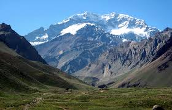
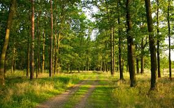
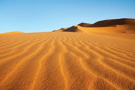
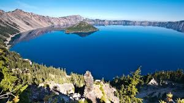
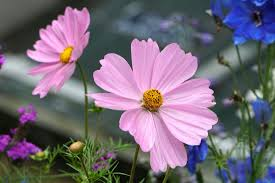
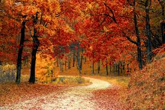
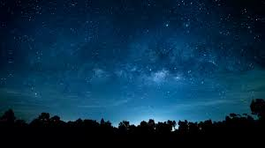

This gallery showcases beautiful nature scenes from different environments, including mountains, forests, beaches, deserts, and waterfalls. Each image highlights a unique landscape and shows the variety of colors, textures, and light found in nature.
I chose these images to create a calm and visually appealing responsive website. The page is designed to adapt to mobile, tablet, and large screens, while also supporting user preferences such as reduced motion and dark color mode.







